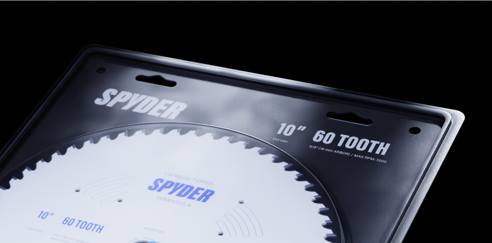
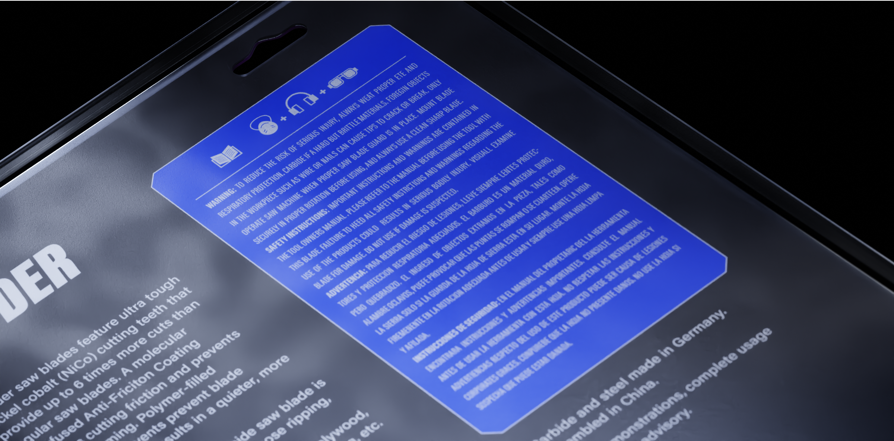
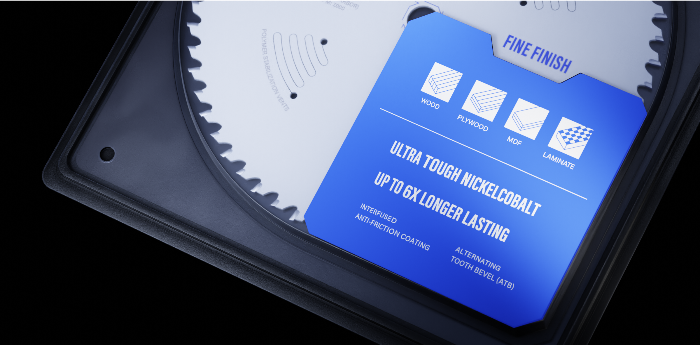

A professional contractor needs the right tools for the job, not the flashiest ones. This redesign of the Spyder Tarantula is informed by that sentiment. This product doesn't need to compensate for anything, so it can speak for itself with it's quality.




